镜头设计工作台 v0.14 · UI 使用教程
12 屏带你走完所有界面——真实截图 + 每步操作 + 要点提示
01
启动与主界面总览
数据页 · 指标行 · 工作区 tabs
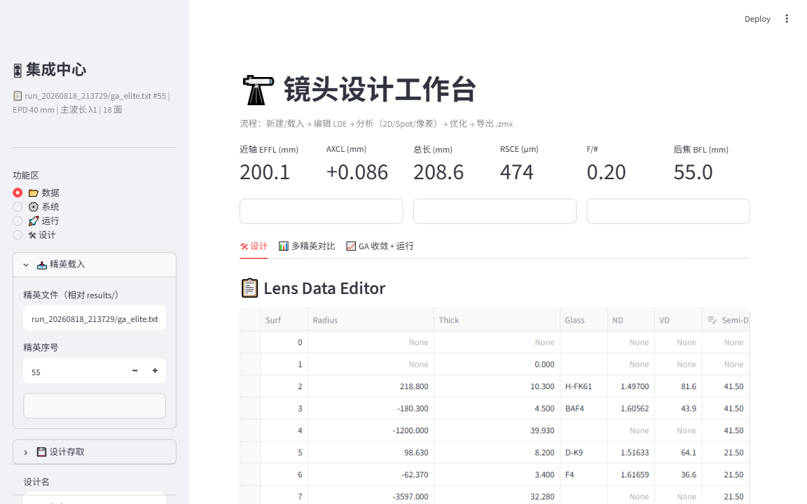
- 🖱 操作在项目目录执行 streamlit run app.py，浏览器自动打开 http://localhost:8501
- 🖱 操作启动即自动载入默认结构（本图：run_20260818_213729/ga_elite.txt #55），顶部标签显示 EPD 40mm | 主波长λ1 | 18 面
- 🔍 看到指标 6 卡＝当前镜头的"体检报告"：近轴 EFFL 200.1mm、AXCL +0.086mm、总长 208.6mm、RSCE 474µm、F/# 0.20、后焦 BFL 55.0mm
- 🔍 看到主区域 3 个 tab：🛠 设计（核心工作区）/ 📊 多精英对比 / 📈 GA 收敛 + 运行
- 🔍 看到左侧"集成中心"＝功能区导航（📂 数据 / ⚙️ 系统 / 🚀 运行 / 🛠 设计），下方是画布管理和光阑设置
💡 指标行随时刷新——你在 LDE 里改任何一个数字，回车后所有指标立即重算。改前先记住这里的"初始体检值"，优化效果好坏一目了然。
02
⚙️ 系统页：口径 / 后焦 / 波长
侧边栏 → 系统
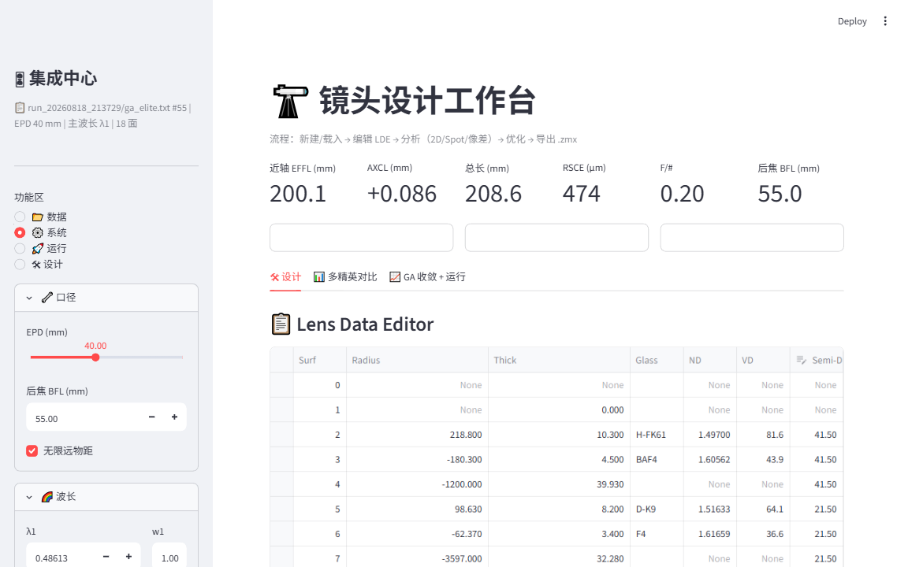
- 🖱 操作侧边栏点 ⚙️ 系统，出现系统参数区
- 🖱 操作EPD（入瞳直径）滑块：40mm（对应 F/5 @200mm）；拖到 58mm 可预览大光圈效果
- 🖱 操作后焦 BFL 输入：55mm（法兰距）；勾选无穷远物距＝深空目标；取消勾选后可输入有限物距（mm）
- 🖱 操作波长区：λ1=486.13nm（F 蓝）/ λ2=587.56nm（d 绿）/ λ3=656.27nm（C 红），可直接改值；主波长下拉选择用于艾里斑等计算
⚠️ 改动即生效：所有分析图自动重算（带缓存，切回时即时显示）。大幅改口径后注意观察指标行的 F/# 和 RSCE 变化。
03
🚀 运行页：GA 任务控制（可选）
侧边栏 → 运行 · 需要 GA 完整项目环境
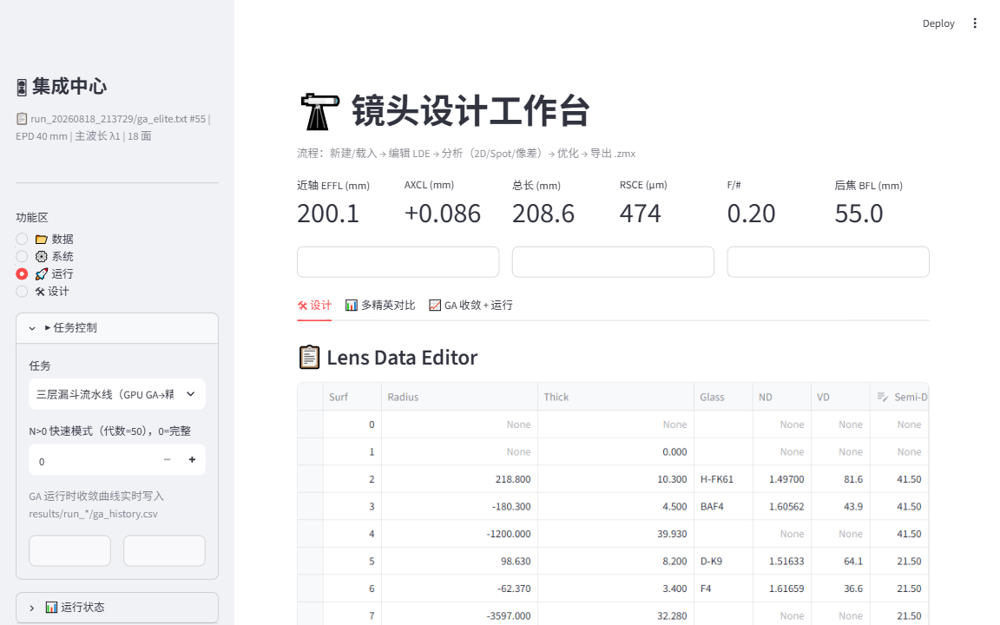
- 🖱 操作侧边栏点 🚀 运行 → 任务控制展开区：选任务（三层漏斗流水线 / 完整流水线 / 解码 / 精修优化 / 场曲精修 / 色差精修 / Zemax 验证 / 可视化 PNG）
- 🖱 操作填任务参数（如流水线的 quick 代数）→ ▶ 启动；随时 ⏹ 停止
- 🔍 看到运行状态：PID + 锁状态（同一时间只跑一个任务）；收敛曲线：自动读 ga_history.csv 实时绘制；任务日志尾部：看最近输出
⚠️ 可选功能：未配置环境变量 GA_PROJECT_ROOT 时此页只显示提示，不影响其他功能。设置方法见项目内《使用说明.md》12.2 节。Zemax 验证任务会启动 OpticStudio COM，请勿与其他 Zemax 任务并发。
04
🛠 设计页：LDE 表格（核心工作区）
侧边栏 → 设计 · 白纸作画 + 视图切换

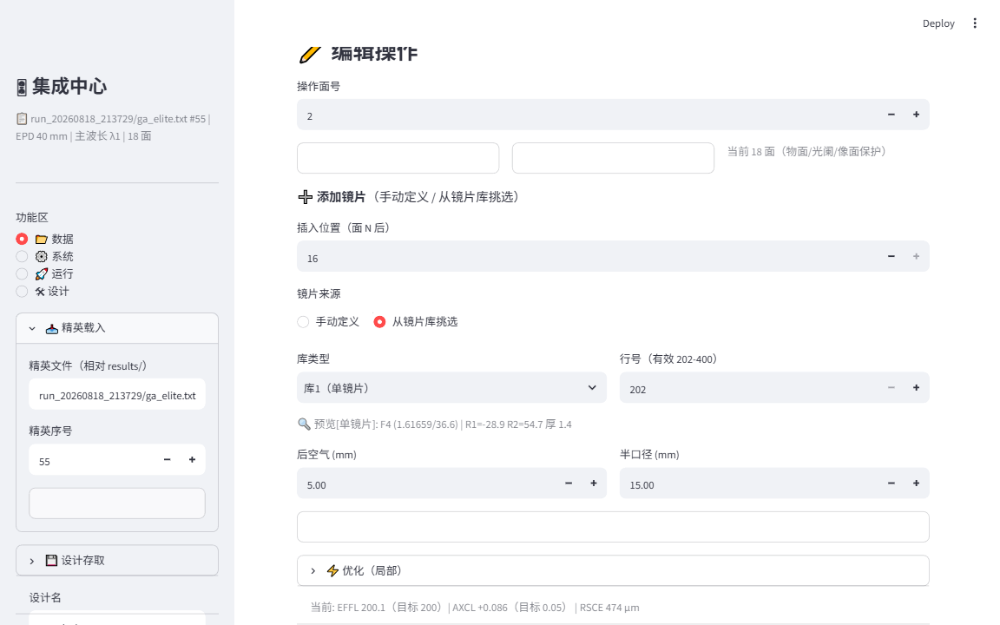
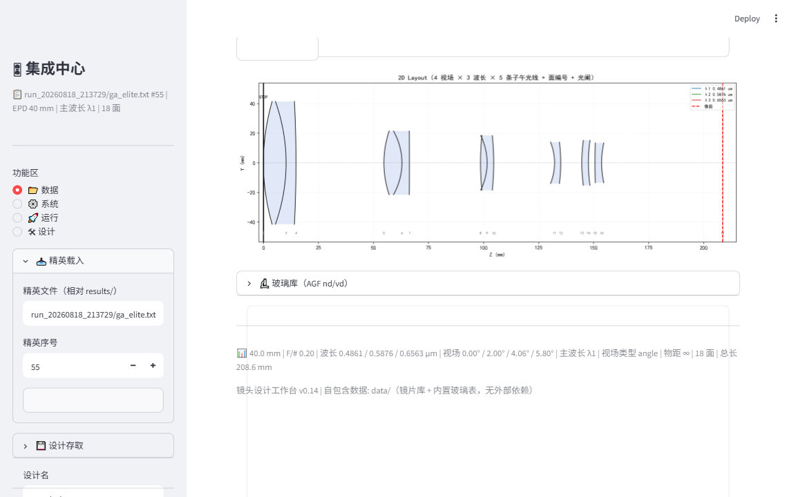
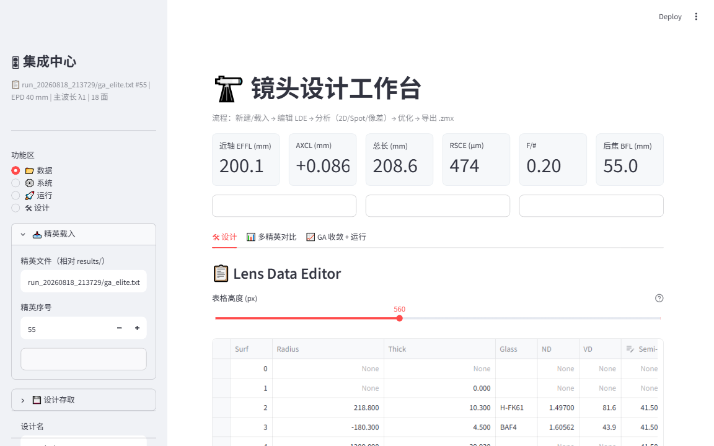
- 🖱 操作侧边栏点 🛠 设计，主区域保持 🛠 设计 tab（默认）
- 🖱 操作LDE 表格：直接点单元格修改 Radius / Thick / Glass，回车生效；输入玻璃名（如 BAF4）自动带出 AGF 实测 nd/vd（绿色提示"玻璃名自动带出"）
- 🖱 操作添加表面：表格底部"添加行"；删除：勾选行 → 删除按钮（自动避开光阑/物面/像面）
- 🖱 操作添加镜片（手动定义）：插入位置选"面 N 后"→ 选玻璃（81 种自动带出 nd/vd）→ 填 R1/R2/厚度/后空气/半口径 → 点插入镜片
- 🖱 操作添加镜片（从镜片库挑选）：来源切"从镜片库挑选"→ 选库类型（1-4 单镜片 / 5-6 双胶合）→ 行号（范围自动显示有效区间）→ 🔍 实时预览该镜片参数 → 填后空气/半口径 → 点插入库镜片（单镜片插 2 行、双胶合插 3 行）
- 🔍 看到下图"从镜片库挑选"模式：库1 行 202 = F4 单镜片（R1=-28.9 / R2=54.7 / 厚 1.4），库数据与 GA 精英解码同款
- 🖱 操作侧边栏 画布管理：✨ 新建空白镜头 / 重置默认；光阑设置：改光阑面号
- 🔍 看到主区域中部 分析视图 切换按钮：2D Layout / 3D / Spot / 像差分析（下面几张图逐一介绍）
- 🔍 看到2D Layout（v0.16 升级）：每视场 × 每波长 5 条子午真实光线（上/下边缘 + 主光线 + 中间采样，optiland 真实追迹）；镜片浅蓝填充 + 面编号（下方灰字）+ 光阑 STOP 标记 + 三波长焦点线（轴向色差可视化）
- 🔍 看到🪟 总览视图：分析视图切"总览"＝2×2 四个窗口平铺（2D / Spot / MTF / 场曲）；每个窗口右下角可拖拽缩放（灰色边框 = 窗口）；侧边栏 ⚙️ 系统页"图窗口尺寸"滑块整体缩放；LDE 表格上方"表格高度"滑块调表格高度
F 蓝
d 绿
C 红
面 0=物面 · 面 1=光阑 · 末面=像面
05
🔬 玻璃库与玻璃搜索
设计 tab 内 · 81 种 AGF 实测玻璃
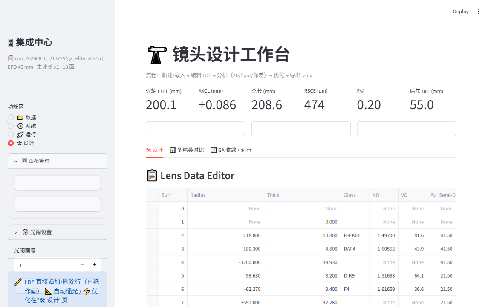
- 🖱 操作设计 tab 展开 🔬 玻璃库（AGF nd/vd）（默认折叠，点标题展开）
- 🔍 看到内置 81 种 CDGM/SCHOTT 玻璃目录表（名称 / nd / vd）
- 🖱 操作🔎 玻璃搜索：输入目标 nd（默认 1.5163）+ 目标 vd（64.1）→ 点搜索 → 按距离（归一化欧氏）排序的结果表，最近的排最前
💡 常用操作：想替换某片玻璃时，先搜出目标 nd/vd 附近的候选，再回 LDE 表格直接改玻璃名（nd/vd 自动填充）。
06
📊 多精英对比：挑候选结构
主区域 tab → 多精英对比
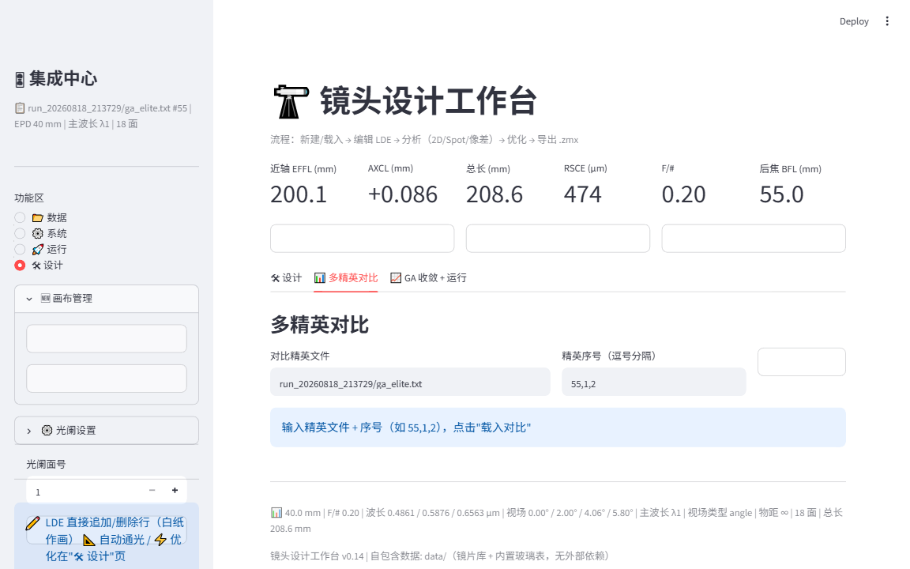
- 🖱 操作主区域切 📊 多精英对比 tab
- 🖱 操作输入 对比精英文件（默认 run_20260818_213729/ga_elite.txt）+ 精英序号（逗号分隔，如 55,1,2）→ 点 载入对比
- 🔍 看到对比表：各精英的 EFFL / AXCL / RSCE / 总长 / 结构差异，方便挑选继续精修的候选
💡 精英序号越小 MFE 越好（1=GA 最优）；对比后可用"📂 数据"页载入对应序号细看。
07
3D 视图：整体结构
设计 tab → 分析视图 → 3D
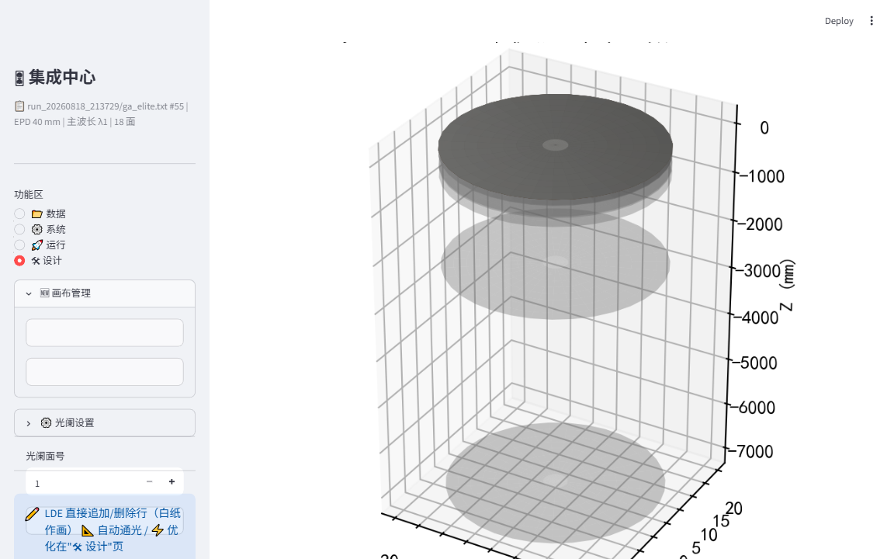
- 🖱 操作设计 tab → 分析视图点 3D（按钮文字就是"3D"）
- 🔍 看到镜片半透明盘（灰色）+ 线框坐标盒 + Z 轴标注；三波长光线着色
- 🖱 操作鼠标拖拽旋转视角，检查镜片间距/口径比例是否合理
⚠️ 3D 渲染约 1-3 秒，切换后稍等；若画面还是上一视图，等状态栏转完再操作。
08
⭕ Spot 点列图：星点质量
设计 tab → 分析视图 → Spot
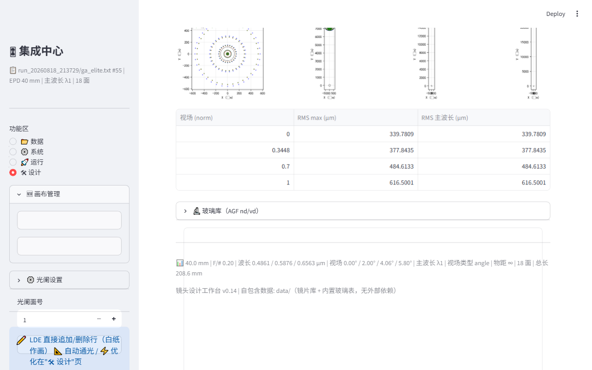
- 🖱 操作设计 tab → 分析视图点 Spot
- 🔍 看到每视场一个子图：三波长散点（F 蓝 / d 绿 / C 红）+ 黑色虚线圆＝艾里斑（1.22λF#，Zemax 同款标注）
- 🔍 看到下方 RMS 表：视场（norm）/ RMS max（µm） / RMS 主波长——对应指标行的 RSCE（全视场最大）
✅ 判断标准：散点越集中越好；全部落在艾里斑圈内 ≈ 接近衍射极限。边缘视场（norm=1，5.8°）RMS 最大，深空镜头重点看这里。
09
📉 像差分析：10 种类型
设计 tab → 分析视图 → 像差分析 · 选择即自动计算

- 🖱 操作设计 tab → 分析视图点 像差分析 → 下拉选类型（选择即出图，无需点按钮）
- 🔍 看到类型清单： 场曲 Field Curvature（子午 T/弧矢 S + 畸变）、畸变 Distortion、光线扇形图 Ray Fan、RMS vs 视场、能量集中度 Encircled Energy、畸变网格 Grid Distortion、透过焦 Spot、透过焦 MTF、RMS 波前误差 vs 场、MTF vs 空间频率
- 🖱 操作每张图下方 ⬇ 下载像差图 存 PNG；切换类型有缓存，回来即显
💡 深空镜头重点看：场曲（平场）、MTF（锐度）、RMS-vs-场（像场一致性）。首次计算 1-5 秒，之后秒回。
10
🌈 轴向色差（APO 判定）
像差分析视图内展开
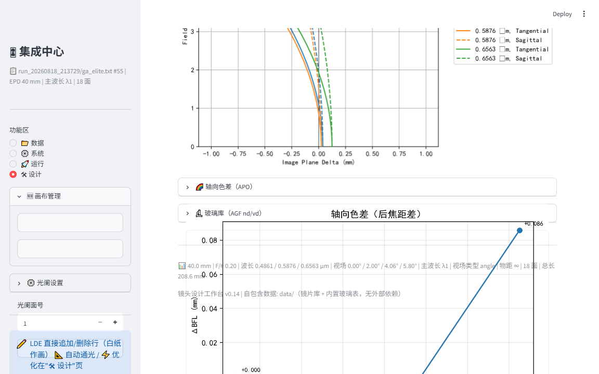
- 🖱 操作像差分析视图展开 🌈 轴向色差（APO）
- 🔍 看到上图：场曲（Field vs Image Plane Delta，四线＝T/S × 双波长）；下图：轴向色差（后焦距差）——F/d/C 三波长焦点分离曲线，峰值即 AXCL
- 🔍 看到当前设计：峰值 0.086mm —— 指标行 AXCL +0.086 与之对应
✅ APO 判定：峰值 < 0.1mm 即达 APO 级别（本工具设计目标）。此图是"APO 认证"的关键证据。
11
⚡ 局部优化：目标差距一眼可见
设计 tab → 展开"⚡ 优化（局部）"
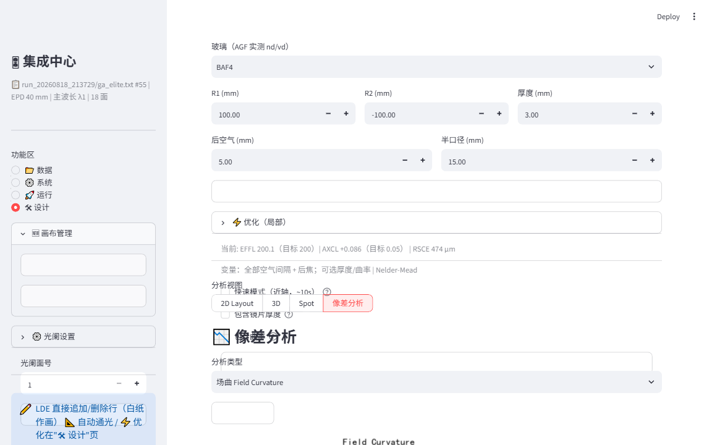
- 🖱 操作设计 tab 展开 ⚡ 优化（局部）（在 LDE 表格下方）
- 🔍 看到MFE 分解预览：当前 EFFL 200.1（目标 200）｜ AXCL +0.086（目标 0.05）｜ RSCE 474µm —— 优化前先看清差距
- 🖱 操作勾选 快速模式（近轴，~10s）＝不含星点，快但粗；标准模式含 RSCE，1-3 分钟更准；勾选 包含镜片厚度＝厚度也当变量（默认只动空气间隔+后焦）
- 🖱 操作点 ▶ 运行优化 → 进度条 + 收敛曲线实时绘制 → 完成后指标行自动刷新
⚠️ 优化器：Nelder-Mead 多起点搜索。快速模式适合调色差/焦距；最终定稿建议跑标准模式。
12
📊 页脚状态栏：全参数一屏速览
任何页面的最底部

- 🔍 看到一行状态：口径 40.0mm | F/# 0.20 | 波长 0.4861/0.5876/0.6563µm | 视场 0/2/4.06/5.8° | 主波长 λ1 | 视场类型 angle | 物距 ∞ | 18 面 | 总长 208.6mm
- 🔍 看到版本行：镜头设计工作台 v0.14 ｜ 自包含数据 data/（镜片库 + 内置玻璃表，无外部依赖）
- 🖱 操作任何改动后滚到最底部核对当前系统状态，导出/汇报前截图留档
💡 状态栏 = 系统的"飞行仪表盘"：物距 ∞ 表示无穷远（深空），视场类型 angle 表示角度视场。配合《使用说明.md》一起阅读效果更佳。
13
🔭 天文工具：深空摄影计算
主区域第 4 个 tab · 成像 / 星点 / 配件
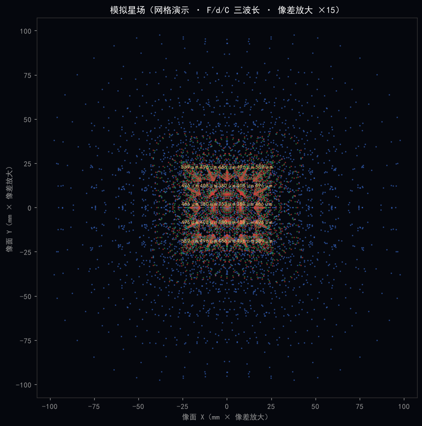
- 🖱 操作主区域切 🔭 天文工具 tab（4 个 tab 的最后一个）
- 🖱 操作📷 成像系统计算器：选传感器（全画幅 / APS-C / M4/3 / 1″）+ 像元尺寸（默认 3.76µm）+ 焦距（默认当前镜头）→ 8 项实时输出：像元尺度（″/px）、视场角、衍射极限（138.4/D）、艾里斑（2.44λF#）、星点 FWHM（≈2.355×RSCE）、采样率判定（Nyquist 提示）、极限星等、集光力
- 🖱 操作🔭 星点 / 视宁度 / 焦深：视宁度滑块对比衍射极限（判断口径是否受限）；临界焦深 ±2λF#²（对焦精度需求）；铝筒温漂 α·L·ΔT（超焦深提醒电动调焦）
- 🖱 操作🛠 配件计算：滤镜/平窗焦点位移 t(1-1/n)；减焦/增倍合成系统（焦距/F#/FOV）；卡口法兰距匹配（T 环 55 / EF 44 / E 18 / Z 16 / RF 20）
- 🖱 操作🪐 月面 / 行星像比例：选天体（月亮 31′ / 太阳 32′ / 木星 40″ / 土星 18″ / 火星 17″ / 金星 12″）→ 像直径 mm + 占像素数 + 占画幅 %——规划增倍镜 / 行星相机像元
- 🖱 操作🌌 曝光 / 极限星等（SNR 模型）：目标星等 / 单张曝光 / QE / 天光（暗空→城市）/ 读出噪声 / 叠加张数 → 目标 SNR + 单张极限 + 叠加极限 + 欠曝判定
- 🖱 操作🔧 平场镜（减焦镜）薄透镜设计：正向（主镜+减焦镜→合成焦距/减焦率）；反向（目标减焦率 → 反推所需 f₂ 设计规格）
- 🖱 操作🌠 模拟星场（像差可视化）（本图）：真实光线追迹渲染模拟星空——每颗星 = 该视场点列图（F/d/C 三波长叠加）。网格演示 25 星：中心圆点=球差、边缘彗星尾=彗差、四角椭圆=像散、彩边=横向色差；随机星空深空照片感；像差放大 / 离焦 / RMS 标注可调；🎞 离焦对比 5 帧（-400~+400µm）对焦判断；🎯 测算最佳对焦位置
- 🖱 操作📷 曝光模拟照片：像素级噪声模拟（真实追迹 RMS → 高斯 PSF），并排"单张原始" vs "叠加 N 张"（噪声降 √N、暗星浮现），标题标注单张/叠加极限星等
💡 所有数值与当前镜头实时联动（焦距 / 口径 / RSCE）；设计滤镜轮、减焦镜、转接环之前先在这里算一遍；模拟星场是"所见即所得"的像差体检——放大倍数越大，彗差/色散形态越清晰。